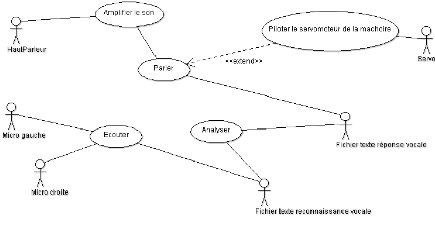
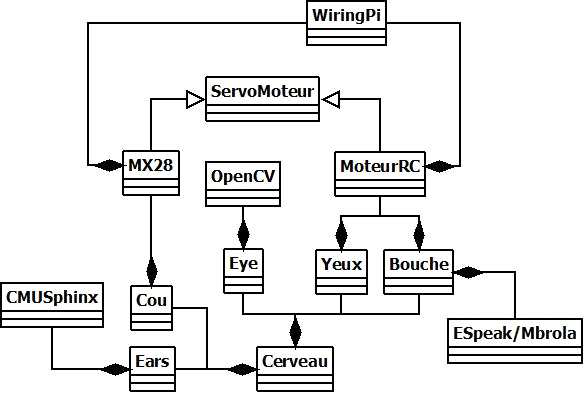
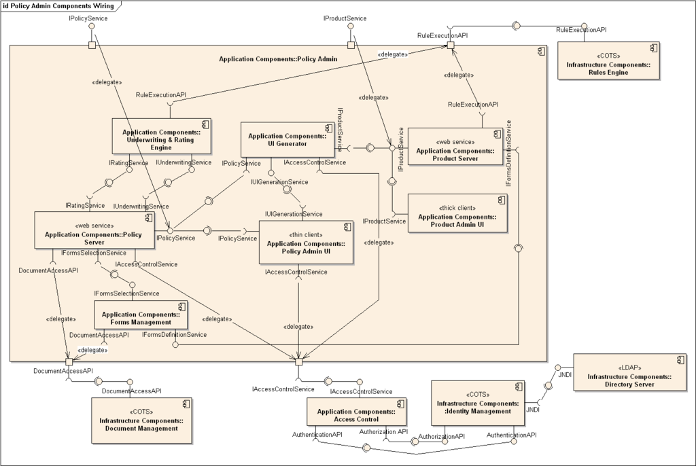

Dans le cadre du développement d'une application mobile, il est nécessaire d'avoir des outils pour communiquer avec le client, mais aussi entre informaticiens afin d'établir un standard compréhensible par tous. Cette communication doit également permettre d'orienter une réflexion sur le sujet du projet. A la fin du XXeme siècle, un standard à été adopté par la communauté informatique : il s'agit de représenter l'information sous forme de schéma normalisé. L'ensemble des schémas, ou diagrammes, utiles au développement d'un projet informatique est contenu dans un langage de modélisation appelé UML.
Activités :
Cas d'utilisations :

Classes :

Déploiement :

Etat-Transition :

Communication :

Objet :

Composants :

Séquence :

Cas d'utilisation : Il permet d'identifier toutes les utilisations que l'on peut faire du système, pour définir les besoins avec le client.
Diagramme global d'interaction Il permet d'établir l'enchaînement des différentes activités de l'application. Il est très intéressant dans le cadre d'une application mobile de part l'architecture de ces dernières (Navigations entre fenêtres uniques)
Activités : Diagramme permettant de détailler une activité de l'application. Très utile pour les mêmes raisons que citées précédemment.
Classes : Répond à la troisième partie du problème en permettant avant le codage une conception idéale en décrivant de manière précise les différentes classes du projet.
Séquence L'interaction entre l'appareil et l'utilisateur étant poussé à son paroxysme avec une application mobile, le diagramme de séquence est ici très utile. Celui-ci sert à mettre en exergue les différents processus et traitements résultant d'une interaction homme-machine lors de l'utilisation du logiciel.